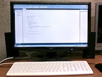
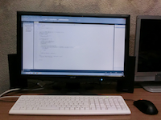
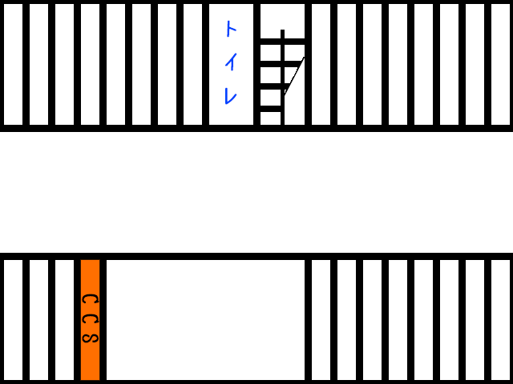

About
活動紹介
千葉大学電子計算機研究会（CCS）では、プログラミング・CG・DTMなど、コンピュータに関連した創作活動を行っています。 近年は、ゲーム制作が活動の中心となっており、ゲームのためのプログラミング・CG・DTM・シナリオ執筆をしています。 制作した作品は、4月のサークルの日、11月の大学祭にて展示し、多くの方にプレイしてもらっています。 さらに、外部のイベント（コミックマーケット・サンシャインクリエイション等）へ参加し、作品集を頒布することもあります。
また、CCSでは1年生向けに講座を開いています。 C言語などのプログラミング言語、Photoshop・SAIなどのイラストツール、DTM、ゲーム制作、Webサイト制作など、サークルの活動ではもちろん、個人での活動や大学の講義でも役に立つ講座を開いています。 ですので、「プログラミングの知識を深めたい」という人はもちろん、「ゲームや音楽を作りたいけどやり方が全くわからない」という人も、安心してCCSに入ることができます。 実際に、1年生の終わりには、自分でゲームが作れるようになった人も沢山います。 上記メニューの「Works」より会員が制作したゲームなどの作品の紹介をしているので御覧ください。
サークル紹介
普段は、昼休みや空きコマの時間に部室にいる人も多く、ゲーム制作のために皆で話し合ったりもします。 それ以外にも、TVゲームやPCゲームをして遊んだり、麻雀をしたり、談笑したり、暖を取ったりと、大体の時間には部室に人がいます。
計算機系のサークルとしては珍しく、工学部、理学部、医学部、薬学部、園芸学部、法経学部、文学部と、様々の学部・学科の人が所属しています。 工学部だけど絵描き、法経学部だけどプログラマー、文学部だけど音楽制作と、皆学部など気にせず活動しています。 CCSはどんな学部・学科の方でも大歓迎です！
部室の環境
部室にあるPC達です。
 |
Akagi | Windows8 13年度自作PC講座にて、快適な作業が行えるパソコンを目指して組みました。 |
 |
Innsmouth | WindowsServer2008 12年度自作PC講座にて、安価に自作する練習として組みました。 |
|  | Zark | Windows7 11年度自作PC講座にて、音楽制作班用に組みました。 |
|  | Greif | Windows7 10年度自作PC講座にて組みました。 |
{kind=link}
{kind=link}
CCSのマスコットキャラクターである「阿比留総統」です。 2012年に導入した複合機です。ジャケット製作から講義資料のコピーまで、大活躍しています。 エアコン、冷蔵庫、こたつ、毛布など、生活設備が充実してます。 PS2、XBox360、SFC、Wiiなど、色んなゲーム機があります。ただし全部私物です。
活動場所
文化系サークル会館にて活動しています。
少しでも興味を持っていただけたなら、ぜひお越しください。
サークル会館の1階の地図です。

お待ちしています！